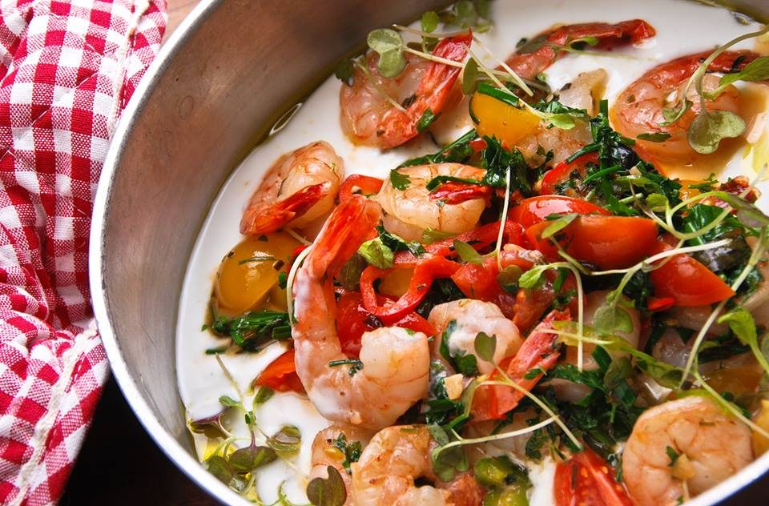

Vista
A taste the world has recognised — welcome to VISTA

3F, Floating Island, Some Sevit, Banpo
With floor-to-ceiling glass on every side, Vista is a casual pub restaurant famed for its panoramic night view of the Han River.
Vista serves Italian-style casual pub dining made with fresh ingredients alongside beers from around the world. With 250 seats, it welcomes everything from a simple tea or coffee to launch events, parties, elegant course dinners and official banquets.
Spotlighted by international media as one of Seoul's signature unique venues, Vista also offers four to five private rooms and a separate banquet hall for 100 guests — ideal for hosting overseas guests, special gatherings, family celebrations such as first birthdays and 60th birthdays, and business parties. All seating is by reservation.